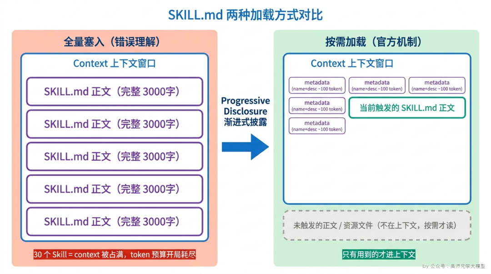
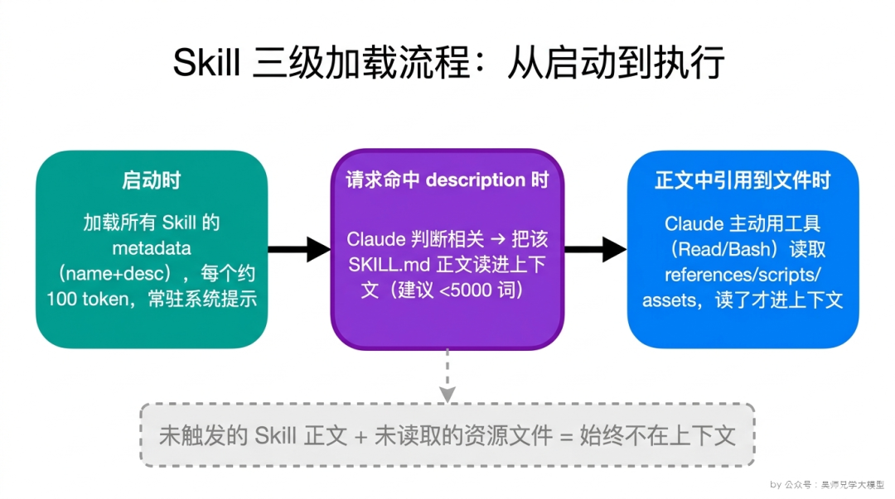
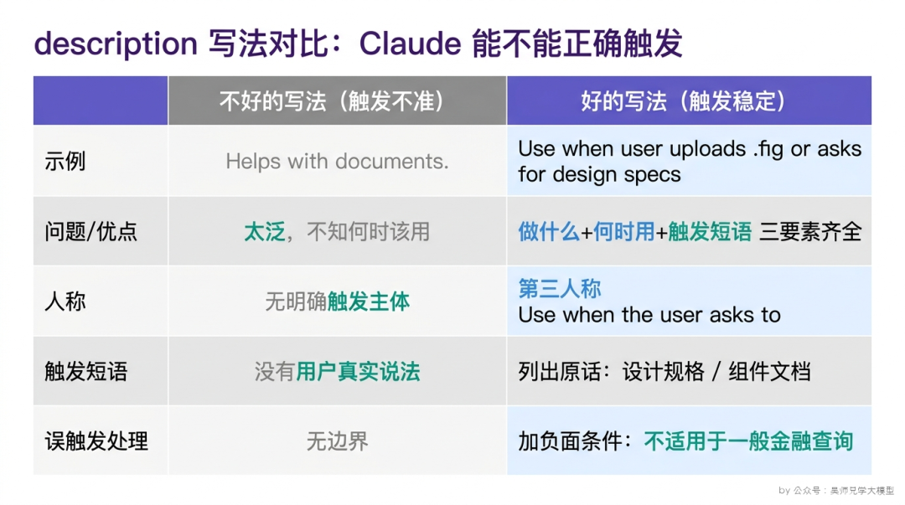

面试官摇摇头，拿出手机翻到 Anthropic 的官方文档，转过来给他看，指着其中一段："人家不是全量加载的，是 progressive disclosure，渐进式披露。分三级，启动时只加载 metadata，正文按需加载，资源文件让模型自己用工具去读。你连第一步都搞错了。"
这是一篇关于 Claude Code Agent Skills 核心加载机制的深度拆解，源自一场滴滴面试中的真实追问链。面试官从"SKILL.md 是一次性全读进 context 的吗"这个看似基础的问题出发，一路追问到 metadata 触发判断、description 写法、资源文件加载方式——四次追问环环相扣，把"你到底有没有真正理解 Skill 是怎么跑起来的"这个问题挖到了底。
很多人对 Skill 的理解停留在"装上 = 加载进上下文"，这是把 Skill 当成了一段固定的 system prompt。如果真是这样，那面试官的反问就成立了：装 30 个 Skill，每个两三千字，光这些文件就能把上下文窗口吃掉一大块，模型还没开始干活，token 预算先没了一半。
Anthropic 的设计显然不会这么蠢。它的核心机制叫 Progressive Disclosure（渐进式披露），官方文档里把它列为 Skill 的第一条设计原则。一句话概括：按需加载，谁用到谁加载，没用到的内容根本不进上下文。
具体分成三级：
| 层级 | 内容 | 加载时机 | 进不进上下文 |
|---|---|---|---|
| 第一级 Metadata | YAML frontmatter（name + description） | 启动时，永远加载 | 进，但极小 |
| 第二级 Instructions | SKILL.md 正文 | Claude 判断该 Skill 与当前任务相关时 | 触发了才进 |
| 第三级 Resources | references/、scripts/、assets/ 里的文件 | Claude 主动用工具去读时 | 读了才进 |

这张表是整篇文章的骨架。先记住一个判断：任何时候，你的上下文里都不会同时塞着所有 Skill 的全部内容。平时躺在上下文里的，只有每个 Skill 那几十个 token 的 metadata。
这是最容易暴露理解深度的地方。答案是：不会爆，因为正文（第二级）平时根本不在上下文里。
我们顺着启动流程走一遍。当你在 Claude Code 里装了一堆 Skill，启动的瞬间，进入系统提示的只有每个 Skill 的 第一级 metadata——也就是 SKILL.md 文件最上面那段 YAML frontmatter，里面就两个核心字段：
--- name: pdf-extractor description: Extract tables and text from PDF files. Use when the user uploads a .pdf and asks to pull out tables, parse invoices, or convert PDF content to markdown. ---
这段东西有多大？官方给的量级是每个 Skill 大约 100 token。你装 30 个，也就 3000 token 左右，对于动辄 20 万 token 的上下文窗口来说，几乎可以忽略。所以 Anthropic 反而鼓励你装很多个细分的 Skill，而不是把功能全堆进一个臃肿的大 Skill——因为多装几个的成本，仅仅是多几段 metadata 而已。
真正的大头——SKILL.md 正文，停在硬盘上，没进上下文。只有当用户发来的请求命中了某个 Skill 的 description，Claude 判断"这个任务跟这个 Skill 相关"，它才会去把那个 SKILL.md 的正文读进来。
核心认知：metadata 是常驻的、廉价的；正文是按需的、一次只进一两个的。一次对话里，通常只有一到几个 Skill 的正文会被真正加载。哪怕你装了 50 个 Skill，写得再长，只要这次任务只触发其中一个，进上下文的也就那一个的正文。
算笔账就更直观了。假设你装了 50 个 Skill，每个 SKILL.md 正文都写满到 5000 词的上限：
| 全量加载（错误认知） | 渐进式披露（实际机制） | |
|---|---|---|
| 常驻 token | 全部正文（数十万 token） | 50 段 metadata（约 5000 token） |
| 触发 2 个 Skill 后 | —（已经爆了） | + 两份正文（约 10000+ token） |
| 结论 | ❌ 上下文直接撑爆 | ✅ 一万出头 token，完全可控 |
两种算法差出几十倍——差距全在"按需"这两个字上。这就是为什么面试官敢断定"你连第一步都搞错了"：把机制搞反，token 预算的量级估计能差一个数量级。
这也顺带解释了官方为什么对两个地方有体积限制：
换句话说，"token 会不会爆"取决于你有没有踩中体积红线，而不取决于你装了多少个 Skill。机制本身已经帮你把"装得多"这件事的成本压到了最低。

到这里面试官的第三问就接上了：既然 metadata 里就 name 和 description 两个字段，Claude 凭什么靠这么点信息，就能准确判断该不该加载正文？
关键全在 description 怎么写。
Claude 在每次收到用户请求时，会拿这次请求去和上下文里所有 Skill 的 description 做匹配——本质上是一次语义判断："这个 Skill 描述的能力，跟用户现在想干的事，是不是同一件事？" description 写得准，它就触发得准；description 写得糊，它要么该触发不触发（undertriggering），要么瞎触发（overtriggering）。
官方给的 description 公式是：做什么 + 何时使用（触发条件）+ 关键能力。三个要素缺一不可，而新手最容易漏掉的是中间那个"何时使用"。
# 不好的写法 —— 太泛，Claude 不知道什么时候该用 description: Helps with documents. # 不好的写法 —— 只说了做什么，没说何时用 description: Creates sophisticated multi-page documentation systems. # 好的写法 —— 做什么 + 何时使用 + 具体触发短语 description: Analyzes Figma design files and generates developer handoff docs. Use when the user uploads a .fig file or asks for "design specs", "component documentation", or "design-to-code handoff".

Use when the user asks to..."这种句式就是标准写法——它在帮 Claude 建立"用户说了 X，我就该调用这个 Skill"的映射。调试 description 还有个很实用的技巧，官方文档里也提到了：直接问 Claude"你什么时候会用这个 Skill？"它会把它理解的 description 复述给你听。如果它复述出来的触发场景跟你预期的不一样，那就说明 description 没写到位，照着它的反馈改就行。
这是最后一问，也是把"渐进式披露"理解透了才答得上来的一问。
很多人会想当然地以为：既然 SKILL.md 触发后会被加载，那它 references/、scripts/ 目录里的文件，是不是也跟着一起被加载进来了？
不是。第三级资源的加载方式，和前两级有本质区别——它不是被"注入"的，而是被 Claude 主动"读取"的。
这是什么意思？SKILL.md 正文被加载进上下文后，Claude 看到的只是文字。如果正文里写了一句"在编写查询前，请查阅 references/api-patterns.md，其中包含速率限制和分页模式"，那么 Claude 此刻并没有把那个文件读进来——它只是知道"有这么个文件、在那个路径、讲的是这些内容"。
只有当任务真的推进到需要那份文档时，Claude 才会调用工具（在 Claude Code 里就是 Read 或 Bash），把那个文件的内容读进上下文。读进来的也只是它当下需要的那一个文件，而不是整个目录。
这个差别在工程上极其重要，它带来两个直接的好处：
第一，资源文件的体积几乎没有上限。因为它们不常驻、不自动加载，你可以在 references/ 里放很长很详细的 API 文档、几百行的示例、大段的错误码表。它们躺在那里不占任何上下文，只在被点名读取的那一刻才花 token。这正是官方反复强调的那条最佳实践——SKILL.md 正文只放核心指令，详细内容全部下沉到 references/，正文里用链接引用。
第二，scripts/ 里的脚本是被"执行"的，不是被"理解"的。这是 Skill 设计里一个很精妙的点：对于确定性的逻辑（比如数据校验、格式转换），与其用自然语言在 SKILL.md 里描述一堆规则让模型去理解和执行——语言解释是不确定的——不如直接写成一个脚本，让 Claude 用工具去运行它。官方原话是"代码是确定性的，语言解释不是"。所以你会看到很多成熟的 Skill，SKILL.md 里只写一句"运行 python scripts/validate.py --input {文件名} 来校验数据"，真正的校验逻辑全在那个脚本里。Claude 读到这句，就去执行脚本，拿回结果，而不需要把脚本的几百行代码读进上下文逐行理解。
把这一层想明白，你就理解了 Skill 的完整图景：
metadata 负责"让 Claude 知道有这个能力"，
正文负责"告诉 Claude 怎么用这个能力"，
资源和脚本负责"在需要时提供确定性的细节和执行力"。
三级各司其职，每一级只在恰当的时机花恰当的 token。这就是渐进式披露的全部精髓。
如果面试官问到这条链，建议按下面这个节奏答，层层递进，把四个点都覆盖到：
开口就说："SKILL.md 不是一次性全部读进 context 的，Anthropic 用的是 Progressive Disclosure，渐进式披露，分三级按需加载。" 一句话就把基本盘立住了，面试官会知道你懂机制而不是背概念。
Metadata（name+description）启动时常驻、每个约 100 token；正文在 Skill 被判断相关时才加载、建议 5000 词以内；资源文件由 Claude 主动用工具读取。顺手抛出结论："所以装很多 Skill 也不会爆 token，常驻的只有那点 metadata。"
公式是"做什么 + 何时使用 + 触发短语"，第三人称写，列用户真实会说的话，触发过度就加负面条件。能补一句"可以直接问 Claude 什么时候会用这个 Skill 来调试"，是加分项。
强调资源文件和脚本是 Claude 主动调用工具读取/执行的，所以体积没上限，确定性逻辑应该写成脚本而不是写进正文。这一步答出来，面试官基本就确认你是真做过了。
回头看滴滴那位面试官的追问链，它其实没有一个问题是刁难——从"是不是全量加载"到"token 会不会爆"，到"description 怎么触发"，再到"资源怎么读取"，每一问都是上一问的自然延伸。你只要真正写过一个 Skill、被它的触发机制坑过几次，这四个问题是连在一起的、是一口气能答完的。答不上来，恰恰说明只是把 SKILL.md 当成了一个"写指令的文件"，没去想它背后那套加载逻辑。
背答案的人和真正做过的人，说话方式完全不一样。
前者说"SKILL.md 会按需加载，用了 progressive disclosure"，
后者说"我装了二十多个 Skill 实测过，常驻上下文的只有每个约 100 token 的 metadata，正文一次对话通常只触发一两个；有一次我的 description 写得太泛，Claude 在不相关的请求里反复误触发，我加了一句负面条件、把触发短语换成用户真实说法之后才收敛"。
面试官三句话就能听出来你是哪种人。